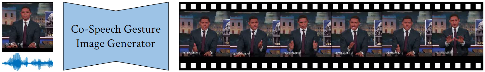

Results
Problem setting illustration. Given an image with speech audio, we generate aligned speaker image sequence.
Qualitative image sequence results on the PATS Image dataset.
We validate that the codebooks contain meaningful motion patterns. Drive the same image with different VQ codes leads to different
gestures (left); Drive different images with the same VQ code shows same motions (right).
|  |
 |

Comment: The first work that utilizes deep learning framework with an adversarial training scheme (GAN) for the task of co-speech gesture generation.